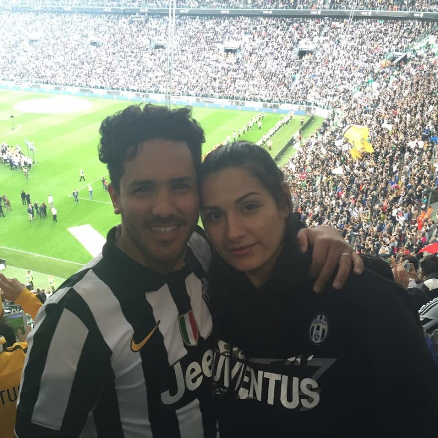

Min lilla familj
Detta är jag och underbara fru, Samaher. Vi har varit gifta i 6 år och förhoppningsvis många år till. Man brukar säga att en bild beskriver mer än 1000 ord. Men om det inte är uppenbart så låt mig berätta lite. Bilden är tagen 2016 i Allianz Stadium, det är Juventus hemmaplan. Det var sista matchen för 2016 då vi vann Scudetton och vi fick den fantastiska stunden att fira det med dem på vår hemmaplan. Det var en bland det bästa stund i mitt liv, att få fira en sådan magisk stund med mitt livs kärlek, plus så var min fru också med.

Nu låt mig berätta om dessa två. De ser ut som änglar. Men låt inte bilden lura er, detta är ett sådant foto som inte berättar hela sanningen. Dessa två är mer som monster än änglar, men de är mina monster. Celine är 3 år och 9 månader, Dylan är nu 2 år och 3 månader. De älskar att äta godis och leka med sina kusiner, allt som har med att inte vara hemma tvekar det inte med.